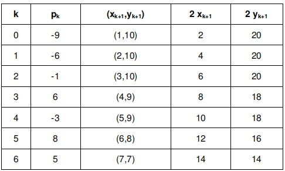
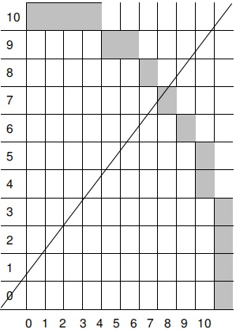

Pada umumnya, lingkaran digunakan sebagai komponen dari suatu gambar. Prosedur
untuk menampilkan lingkaran dan elips dibuat dengan persamaan dasar dari lingkaran
x
2
+y
2
=r
2
.
Lingkaran adalah kumpulan dari titik-titik yang memiliki jarak dari titik pusat yang sama
untuk semua titik. Lingkaran dibuat dengan menggambarkan seperempat lingkaran,
karena bagian lain dapat dibuat sebagai bagian yang simetris. Penambahan x dapat
dilakukan dari 0 ke r sebesar unit step, yaitu menambahkan ± y untuk setiap step.
Simetris Delapan Titik
Proses pembuatan lingkaran dapat dilakukan dengan menentukan satu titik awal. Bila
titik awal pada lingkaran (x,y), maka terdapat tiga posisi lain, sehingga dapat diperoleh
delapan titik.
Dengan demikian, hanya diperlukan untuk menghitung segmen 45o
dalam menentukan lingkaran selengkapnya. Delapan titik simetris, yaitu :
- Kuadran I (x,y),(y,x)
- Kuadran II (-x,y),(-y,x)
- Kuadran III (-x,-y),(-y-x)
- Kuadran IV (x,-y),(y,-x)
Algoritma lingkaran midpoint disebut juga algoritma lingkaran Bressenham. Algoritma
yang digunakan membentuk semua titik berdasarkan titik pusat dengan penambahan
semau jalur disekeliling lingkaran. Dalam hal ini hanya diperhatikan bagian 45
o
dari
suatu lingkaran, yaitu oktan kedua dari x = 0 ke x = R/√2, dan menggunakan prosedur
circle point untuk menampilkan titik dari seluruh lingkaran.

Fungsi lingkaran menggambarkan posisi midpoint antara pixel yang terdekat dengan
jalur lingkaran setiap step. Fungsi lingkaran menentukan parameter pada algoritma
lingkaran.
Langkah-langkah pembentukan lingkaran :
- 1. Tentukan radius r dengan titik pusat lingkaran (xc,yc) kemudian diperoleh (xc,yc)
= 0,r).
- 2. Hitung nilai dari parameter
P0 = 5/4–r ≈ 1-r.
- 3. Tentukan nilai awal k = 0, untuk setiap posisi xk berlaku sbb :
* Bila pk < 0, maka titik selanjutnya adalah (xk+1,yk)
Pk+1 = pk +2 xk+1 + 1
* Bila pk >0, maka titik selanjutnya adalah (xk + 1,yk-1)
Pk+1 = pk + 2Xk+1+1 - 2 yk+1
Dimana 2 xk+1 = 2 xk + 2 dan 2 yk+1 = 2 yk – 2.
- 4. Tentukan titik simetris pada ketujuh oktan yang lain.
- 5. Gerakkan setiap posisi pixel (x,y) pada garis melingkar dari lingkaran dengan
titik pusat (xc,yc) dan tentukan nilai koordinat :
x= x + xc dan y = y + yc.
- 6. Ulangi langkah ke 3 -5, sampai dengan x>=y.
Contoh :
Untuk menggambarkan algoritma Bressenham dalam pembentukan suatu lingkaran
dengan titik pusat (0,0) dan radius 10, perhitungan berdasarkan pada oktan dari
kuadran pertama dimana x =0 sampai x =y.
Penyelesaian :
- * (x0,y0) =(0,0) r = 10
- * (x0,y0) = (0,10) 2x0 = 0, 2y0 = 20
- * parameter p0 = 1-r
p0 = -9

